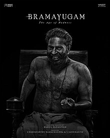

My Best Movies of 2024
My Top 3 Movies That I Watched in 2024
1. Manjummel Boys
I really loved this movie since it was able to connect with me emotionally. All the performances were appreciable, especially considering the large cast.
The part that really got me emotional is:
Kanmani Anbodu Kathalen Naaan Eduthum Kadithame
Ponmani Onveetu Soukyama njn inga soukyame

2. Aavesham
Ranganna is more than just a character; it's an emotion. A fun-packed action comedy that kept me entertained throughout.

3. Bramayugam
Mammokka's acting was superb in this one. His Azinjattam came alive under the direction of Rahul Sadasivan, who gave him ample space to shine.
